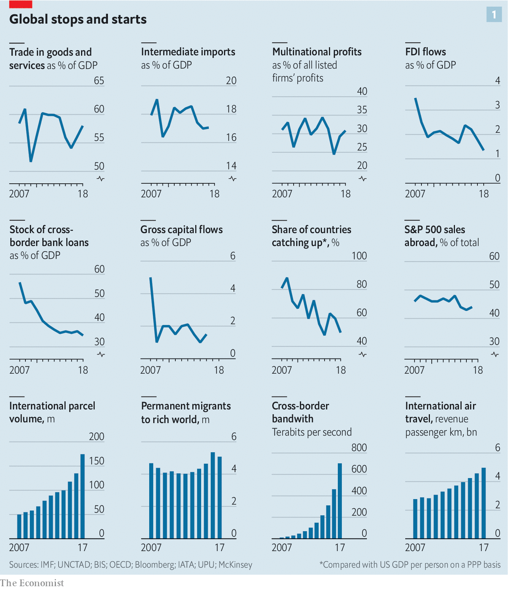

LARGE AND sustained increases in the cross-border flow of goods, money, ideas and people have been the most important factor in world affairs for the past three decades. They have reshaped relations between states both large and small, and have increasingly come to affect internal politics, too. From iPhones to France’s gilets jaunes, globalisation and its discontents have remade the world.
Listen to this story.Enjoy more audio and podcasts on iOS or Android.
Listen to this story
Save time by listening to our audio articles as you multitask
Recently, though, the character and tempo of globalisation have changed. The pace of economic integration around the world has slowed by many—though not all—measures. “Slowbalisation”, a term used since 2015 by Adjiedj Bakas, a Dutch trend-watcher, describes the reaction against globalisation. How severe will it become? How much will a trade war launched by America’s president, Donald Trump, exacerbate it? What will global commerce look like in the aftermath?
There have been periods of more and less globalisation throughout history. Today’s era sprang from America’s sponsorship of a new world order in 1945, which allowed cross-border flows of goods and capital to recover after years of war and chaos. After 1990 this bout of globalisation went into warp speed as China rebounded, India and Russia abandoned autarky and the European single market came into its own. Containerising freight sent shipping costs plummeting. America signed NAFTA, helped create the World Trade Organisation and supported global tariff cuts. Financial liberalisation freed capital to roam the world in search of risk and reward.
Harder blew the trade winds
World trade rocketed as a result, from 39% of GDP in 1990 to 58% last year. International assets and liabilities rose too, from 128% to 401% of GDP, as did the stock of migrants, from 2.9% to 3.3% of the world’s population. On the first two of those measures the world is far more integrated than in 1914, the peak of the previous age of globalisation. Nonetheless, parts of the world remain poorly integrated into the global economy. About 1bn people live in countries where trade is less than a quarter of GDP. World trade can be split into tens of thousands of separate potential corridors between pairs of countries: America and China, say, or Gabon and Denmark. In a quarter of those corridors there was no recorded commerce at all.
When did the slowdown begin? Consider a dozen measures of global integration (see chart 1). Eight are in retreat or stagnating, of which seven lost steam around 2008. Trade has fallen from 61% of world GDP in 2008 to 58% now. If these figures exclude emerging markets (of which China is one), it has been flat at about 60%. The capacity of supply chains that ship half-finished goods across borders has shrunk. Intermediate imports rose fast in the 20 years to 2008, but since then have dropped from 19% of world GDP to 17%. The march of multinational firms has halted. Their share of global profits of all listed firms has dropped from 33% in 2008 to 31%. Long-term cross-border investment by all firms, known as foreign direct investment (FDI), has tumbled from 3.5% of world GDP in 2007 to 1.3% in 2018.

As cross-border trade and companies have stagnated relative to the economy, so too has the intensity of financial links. Cross-border bank loans have collapsed from 60% of GDP in 2006 to about 36%. Excluding rickety European banks, they have been flat at 17%. Gross capital flows have fallen from a peak of 7% in early 2007 to 1.5%. When globalisation boomed, emerging economies found it easy to catch up with the rich world in terms of output per person. Since 2008 the share of economies converging in this way has fallen from 88% to 50% (using purchasing-power parity).
A minority of yardsticks show rising integration. Migration to the rich world has risen slightly over the past decade. International parcels and flights are growing fast. The volume of data crossing borders has risen by 64 times, according to McKinsey, a consulting firm, not least thanks to billions of fans of Luis Fonsi, a Puerto Rican crooner with YouTube’s biggest-ever hit.
Braking point
There are several underlying causes of this slowbalisation. After sharp declines in the 1970s and 1980s trading has stopped getting cheaper. Tariffs and transport costs as a share of the value of goods traded ceased to fall about a decade ago. The financial crisis in 2008-09 was a huge shock for banks. After it, many became stingier about financing trade. And straddling the world has been less profitable than bosses hoped. The rate of return on all multinational investment dropped from an average of 10% in 2005-07 to a puny 6% in 2017. Firms found that local competitors were more capable than expected and that large investments and takeovers often flopped.
Deep forces are at work. Services are becoming a larger share of global economic activity and they are harder to trade than goods. A Chinese lawyer is not qualified to execute wills in Berlin and Texan dentists cannot drill in Manila. Emerging economies are getting better at making their own inputs, allowing them to be self-reliant. Factories in China, for example, can now make most parts for an iPhone, with the exception of advanced semiconductors. Made in China used to mean assembling foreign widgets in China; now it really does mean making things there.
What might the natural trajectory of globalisation have looked like had there been no trade war? The trends in trade and supply chains appear to suggest a phase of saturation, as the pull of cheap labour and multinational investment in physical assets have become less important. If left to their own devices, however, financial flows such as bank loans might have picked up as the shock of the financial crisis receded and Asian financial institutions gained more reach abroad.
Instead, the Trump administration has charged in. Its signature policy has been a barrage of tariffs, which cover a huge range of goods, from tyres to edible offal. The revenue America raised from tariffs, as a share of the value of all imports, was 1.3% in 2015. By October 2018, the latest month for which data are available, it was 2.7%. If America and China do not strike a deal and Mr Trump acts on his threats, that will rise to 3.4% in April. The last time it was that high was in 1978, although it is still far below the level of over 50% seen in the 1930s.
Tariffs are only one part of a broad push to tilt commerce in America’s favour. A tax bill passed by Congress in December 2017 was designed to encourage firms to repatriate cash held abroad. They have brought back about $650bn so far. In August 2018 Congress also passed a law vetting foreign investment, aimed at protecting American technology companies.
America’s control of the dollar-based payments system, the backbone of global commerce, has been weaponised. ZTE, a Chinese technology firm, was temporarily banned from doing business with American firms. The practical consequence was to make it hard for it to use the global financial system, with devastating results. Another firm, Huawei, is being investigated as a result of information from an American monitor placed inside a global bank, who raised a flag about the firm busting sanctions. The punishment could be a ban on doing business in America, which in effect means a ban on using dollars globally.
The administration’s attacks on the Federal Reserve have undermined confidence that it will act as a lender of last resort for foreign banks and central banks that need dollars, as it did during the financial crisis. The boss of an Asian central bank says in private that it is time to prepare for the post-American era. America has abandoned climate treaties and undermined bodies such as the WTO and the global postal authority.
On the counterattack
Other countries have reciprocated in kind if not in degree. As well as raising tariffs of its own, China used its antitrust apparatus in July to block the acquisition of NXP, a Dutch chip firm, by Qualcomm, an American one. Both do business in China. It is also pursuing an antitrust investigation against a trio of foreign tech firms—Samsung, Micron and SK Hynix—which its domestic manufacturers complain charge too much. Since November the French state has taken an overt role in the row between Renault and Nissan, having sat in the back seat for years.
Most multinational firms spent 2018 insisting to investors that this trade war did not matter. This is odd, given how much effort they spent over the previous 20 years lobbying for globalisation. The Economist has reviewed the investor calls in the second half of 2018 of about 80 of the largest American firms which have given guidance about the impact of tariffs. The hit to total profits was about $6bn, or 3%. Most firms said they could pass on the costs to customers. Many claimed their supply chains were less extended than you might think, with each region a self-contained silo.
This blasé attitude has begun to crumble in the past eight weeks, as executives factor in not just the mechanical impact of tariffs but the broader consequences of the trade war on investment and confidence, not least in China. On December 18th Federal Express, one of the world’s biggest logistics firms, said that business was slowing. Estimates for the firm’s profits have dropped by a sixth since then. On January 2nd Apple said that trade tensions were hurting its business in China, and five days later Samsung gave a similar message.
Temporary manoeuvring by firms to get round tariffs may have created a sugar high that is now ending. Some firms have been “front-running” tariffs by stockpiling inventories within America. Reflecting this, the price to ship a container from Shanghai to Los Angeles soared in the second half of 2018, compared with the price to ship one to Rotterdam. But this effect is unwinding and prices to Los Angeles are falling again as global export volumes slow.
America has had bouts of protectionism before, as the historian Douglas Irwin notes, only to return to an open posture. Nonetheless investors and firms worry that this time may be different. Uncle Sam is less powerful than during the previous bout of protectionism, which was aimed at Japan. Its share of global GDP is roughly a quarter, compared with a third in 1985. Fear of trade and anger about China is bipartisan and will outlive Mr Trump. And damage has been done to American-led institutions, including the dollar system. Firms worry that the full-tilt globalisation seen between 1990 and 2010 is no longer underwritten by America and no longer commands popular consent in the West.
Few quick fixes
Faced with this, some things are easy to fix. The boss of one big multinational is planning to end its practice of swapping board seats with a Chinese firm, in order to avoid political flak in America. Supply chains take longer to adjust. Multinationals are sniffing out how to shift production from China. Kerry Logistics, a Hong Kong firm, has said that trade tensions are boosting activity in South-East Asia. Citigroup, a bank, has seen a pickup in deal flows between Asian countries such as South Korea and India.
An exodus cannot happen overnight, however. Vietnam is rolling out the red carpet but its two big ports, Ho Chi Minh City and Haiphong, each have only a sixth of the capacity of Shanghai. Apple, which has a big supply chain in China, is committed to paying its vendors $42bn in 2019 and the contracts cannot be cancelled. It relies on a long tail of 30-odd barely profitable suppliers and assemblers of components, which it squeezes. If these firms were asked to shift their factories from China they might struggle to do so quickly—the cost could be anywhere between $25bn and $90bn.
Over time, however, firms will apply a higher cost of capital to long-term investments in industries that are politically sensitive, such as tech, and in countries that have fraught trade relations. The legal certainty created by NAFTA in 1994 and China’s entry into the WTO in 2001 boosted multinational investment flows. The removal of certainty will have the opposite effect.
Already, activity in the most politically sensitive channels is tumbling. Investment by Chinese multinationals into America and Europe sank by 73% in 2018. Overall global FDI fell by 20% in 2018, according to UNCTAD, a multilateral body. Some of that reflects an accounting quirk as American firms adjust to recent tax reforms. Still, in the last few weeks of 2018, one element of FDI, cross-border takeovers, slipped compared with the past few years. If you assume that the rate of tax repatriation fades and that deal flows are subdued, FDI this year might be a fifth lower than in 2017.
These trends can be used as a crude indicator of the long-run effect of a continuing trade war. Assume that FDI does not pick up, and also that the recent historical relationship between the stock of FDI and tradecan be extrapolated. On this basis, exports would fall from 28% of world GDP to 23% over a decade. That would be equivalent to a third of the proportionate drop seen between 1929 and 1946, the previous crisis in globalisation.
Perhaps firms can adapt to slowbalisation, shifting away from physical goods to intangible ones. Trade in the 20th century morphed three times, from boats laden with metals, meat and wool, to ships full of cars and transistor radios, to containers of components that feed into supply chains. Now the big opportunity is services. The flow of ideas can pack an economic punch; over 40% of the productivity growth in emerging economies in 2004-14 came from knowledge flows, reckons the IMF.
Overall, it has been a dismal decade for exports of services, which have stagnated at about 6-7% of world GDP. But Richard Baldwin, an economist, predicts a cross-border “globotics revolution”, with remote workers abroad becoming more embedded in companies’ operations. Indian outsourcing firms are shifting from running functions, such as Western payroll systems, to more creative projects, such as configuring new Walmart supermarkets. In November TCS, India’s biggest firm, bought W12, a digital-design studio in London. Cross-border e-commerce is growing, too. Alibaba expects its Chinese customers to spend at least $40bn abroad in 2023. Netflix and Facebook together have over a billion cross-border customers.
Services rendered
It is a seductive story. But the scale of this electronic mesh can be overstated. Typical American Facebook users have 70% of their friends living within 200 miles and only 4% abroad. The cross-border revenue pool is relatively small. In total the top 1,000 American digital, software and e-commerce firms, including Amazon, Microsoft, Facebook and Google, had international sales equivalent to 1% of all global exports in 2017. Facebook may have a billion foreign users but in 2017 it had similar sales abroad to Mondelez, a medium-sized American biscuit-maker.
Technology services are especially vulnerable to politics and protectionism, reflecting concerns about fake news, tax-dodging, job losses, privacy and espionage. Here, the dominant market shares of the companies involved are a disadvantage, making them easier to target and control. America discourages Chinese tech firms from operating at scale within its borders and American companies like Facebook and Twitter are not welcome in China.
This sort of behaviour is spreading. Consider India, which Silicon Valley had hoped was an open market where it could build the same monopolistic positions it has in the West. On December 26th India passed rules that clobber Amazon and Walmart, which dominate e-commerce there, preventing them from owning inventory. The objective is to protect local digital and traditional retailers. Draft rules revealed in July would require internet firms to store data exclusively in India. A third set of rules went live in October, requiring financial firms to store data locally, too.
Furthermore, trade in services might bring the kind of job losses that led manufacturing trade to become unpopular. Imagine, for example, if India’s IT services firms, experts at marshalling skilled workers, doubled in size. Assuming each Indian worker replaced a foreign one, then 1.5m jobs would be lost in the West. And even the flow of raw ideas across borders could be slowed. The White House has considered restricting Chinese scientists’ access to research programmes. America’s new investment-vetting regime could hamper venture-capital activity. Technology services will not evade the backlash against globalisation, and may make it worse.
As globalisation fades, the emerging pattern of cross-border commerce is more regional. This matches the trend of shorter supply chains and fits the direction of geopolitics. The picture is clearest in trade. The share of foreign inputs that cross-border supply chains source from within their own region—measured using value added—has risen since 2012 in Asia, Europe and North America, according to the OECD, a club of mostly rich countries (see chart 2).
The pattern changes
Multinational activity is becoming more regional, too. A decade ago a third of the FDI flowing into Asian countries came from elsewhere in Asia. Now it is half. If you put Asian firms into two buckets—Japanese and other Asian firms—each made more money selling things to the other parts of Asia than to America in 2018. In Europe around 60% of FDI has come from within the region over the past decade. Outside their home region, European multinationals have tilted towards emerging markets and away from America. American firms’ exposure to foreign markets of any kind has stagnated for a decade as firms have made hay at home.
The legal and diplomatic framework for trade and investment flows is becoming more regional. The one trade deal Mr Trump has struck is a new version of NAFTA, known as USMCA. On November 20th the EU announced a new regime for screening foreign investment. China is backing several regional initiatives, including the Asian Infrastructure Investment Bank and a trade deal known as RCEP. Tech governance is becoming more regional, too. Europe now has its own rules for the tech industry on data (known as GDPR), privacy, antitrust and tax. China’s tech firms have rising influence in Asia. No emerging Asian country has banned Huawei, despite Western firms’ security concerns. The likes of Alibaba and Tencent are investing heavily across South-East Asia.
Both Europe and China are trying to make their financial system more powerful. European countries plan to bring more derivatives activity from London and Chicago into the euro area after Brexit, and are encouraging a wave of consolidation among banks. China is opening its bond market, which over time will make it the centre of gravity for other Asian markets. As China’s asset-management industry gets bigger it will have more clout abroad.
Yet the shift to a regional system comes with three big risks. One is political. Two of the three zones lack political legitimacy. The EU is unpopular among some in Europe. Far worse is China, which few countries in Asia trust entirely. Traditionally, economic hegemons are consumer-centric economies which create demand in other places by buying lots of goods from abroad, and which often run trade deficits as a result. Yet both China and Germany are mercantilist powers that run trade surpluses. As a result there could be lots of tensions over sovereignty and one-sided trade.
The second risk is to finance, which remains global for now. The portfolio flows sloshing around the world are run by money-management firms that roam the globe. The dollar is the world’s dominant currency, and the decisions of the Fed and gyrations of Wall Street influence interest rates and the price of equities around the world. When America was ascendant the patterns of commerce and the financial system were complementary. During a boom healthy American demand lifted exports everywhere even as American interest rates pushed up the cost of capital. But now the economic and financial cycles may work against each other. Over time this will lead other countries to switch away from the dollar, but until then it creates a higher risk of financial crises.
The final danger is that some countries and firms will be caught in the middle, or left behind. Think of Taiwan, which makes semiconductors for both America and China, or Apple, which relies on selling its devices in China. Africa and South America are not part of any of the big trading blocks and lack a centre of gravity.
Many emerging economies now face four headwinds, worries Arvind Subramanian, an economist and former adviser to India’s government: fading globalisation, automation, weak education systems that make it hard to exploit digitalisation fully, and climate-change-induced stress in farming industries. Far from making it easier to mitigate the downsides of globalisation, a regional world would struggle to solve worldwide problems such as climate change, cybercrime or tax avoidance.
Viewed in the very long run, over centuries, the march of globalisation is inevitable, barring an unforeseen catastrophe. Technology advances, lowering the cost of trade in every corner of the world, while the human impulse to learn, copy and profit from strangers is irrepressible. Yet there can be long periods of slowbalisation, when integration stagnates or declines. The golden age of globalisation created huge benefits but also costs and a political backlash. The new pattern of commerce that replaces it will be no less fraught with opportunity and danger.